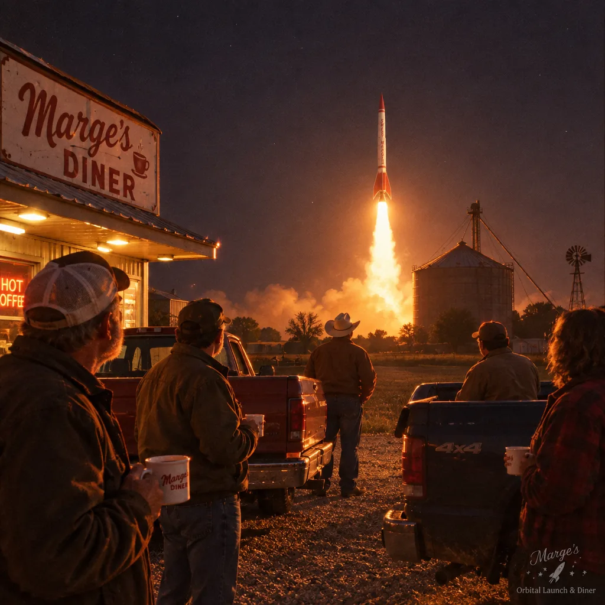
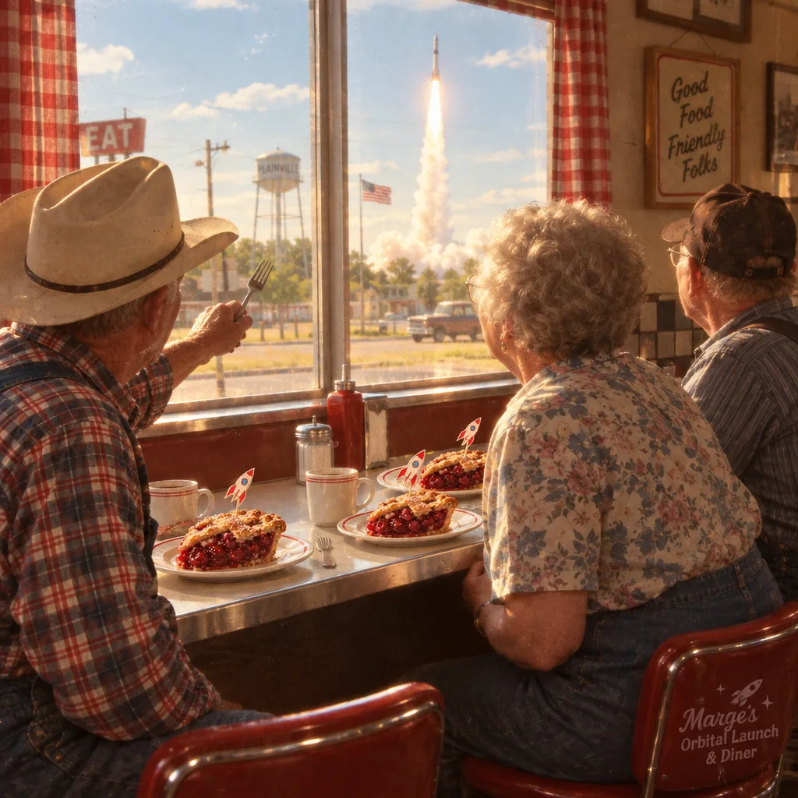
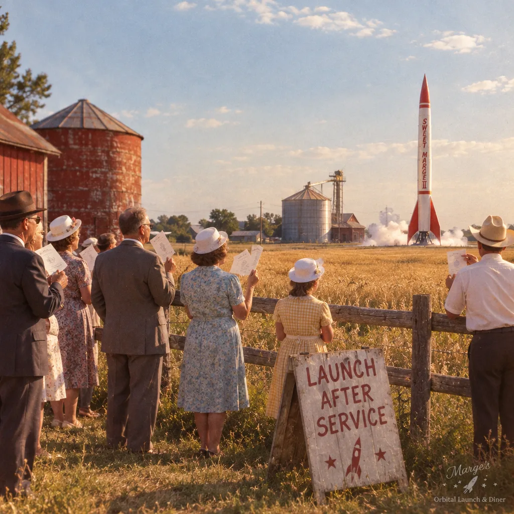
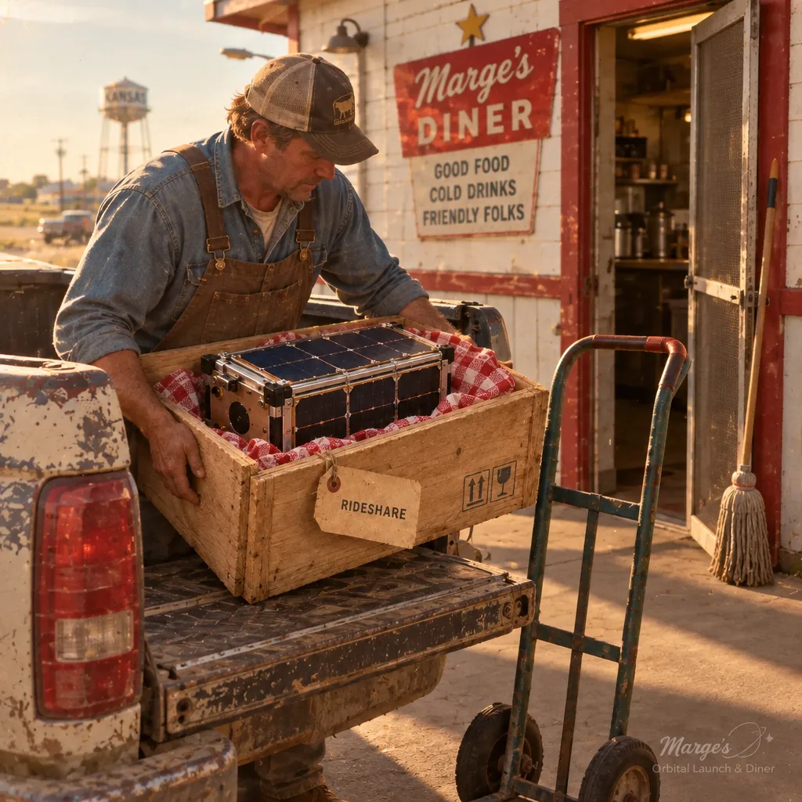
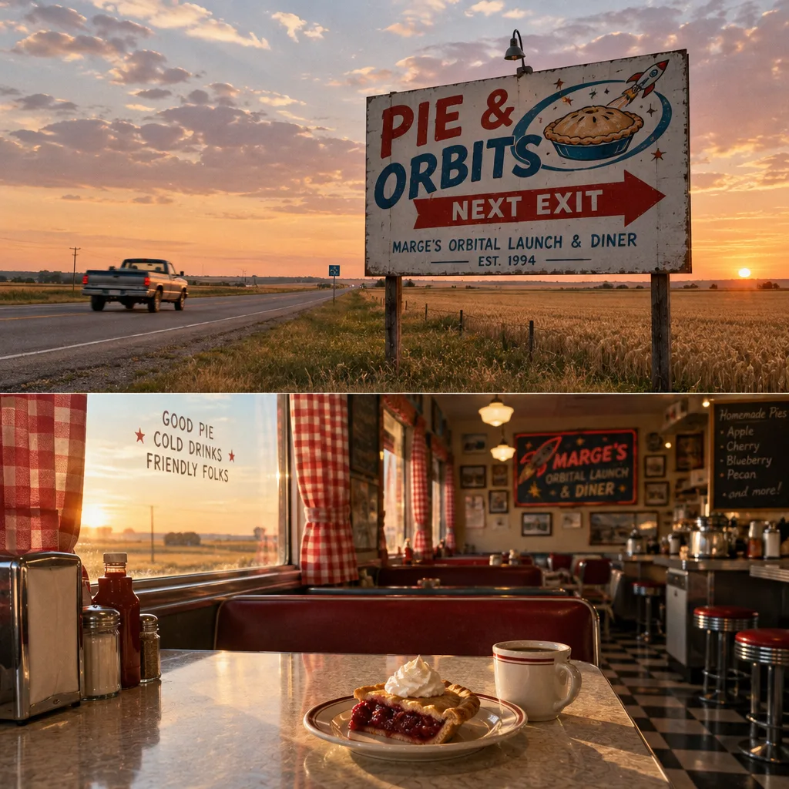
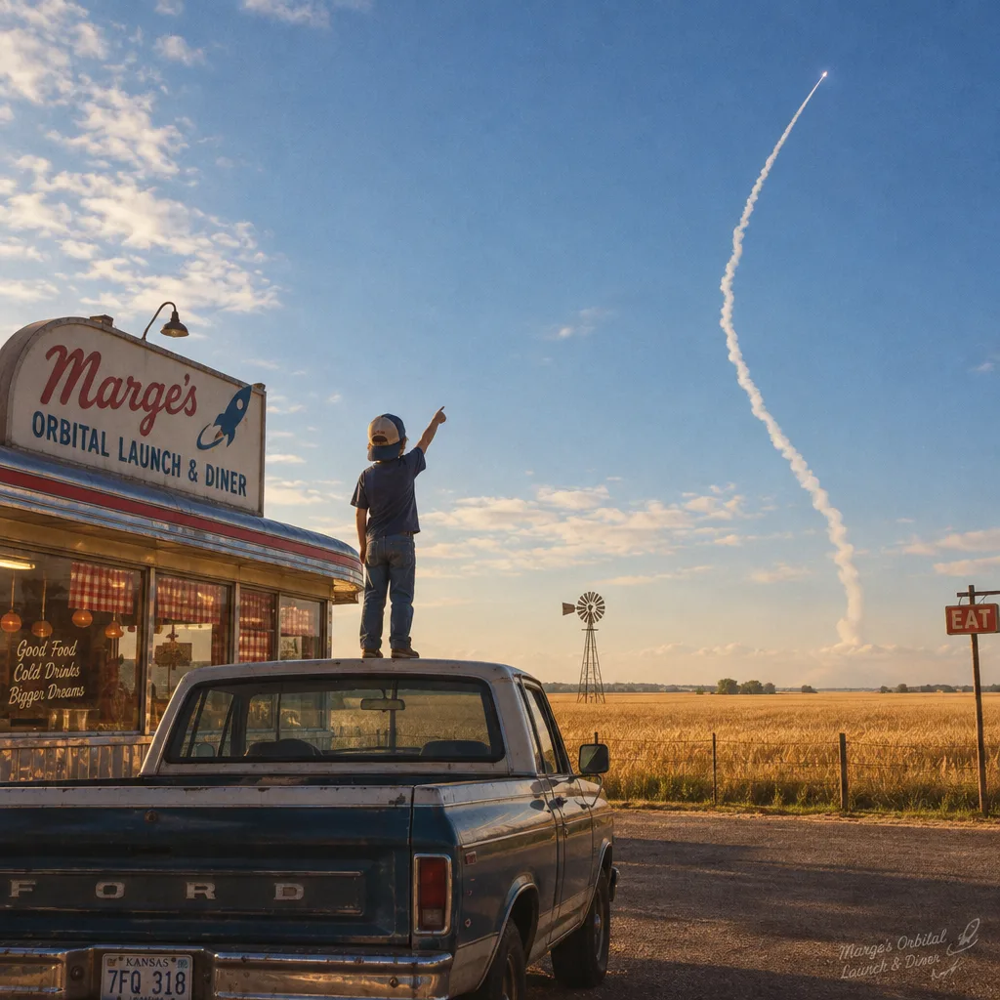

Photos from regulars, customers, and one congregation. Tag us and Marge will print it and tape it by the register, which is the real feed.






Marge rang it up and wrote your name on the launch calendar in pencil, which around here is binding. Food's up in ten. Orbits take a little longer.